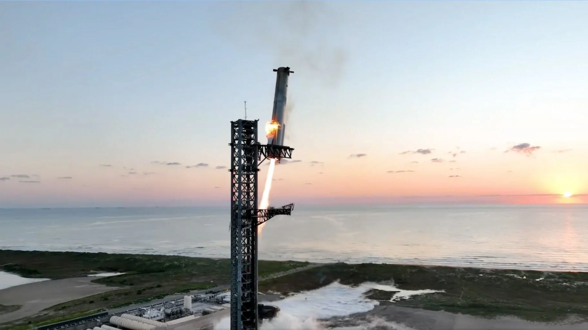
İlk Başarılı Booster Yakalama
Super Heavy booster, fırlatma kulesine başarıyla yakalandı.
Starship'in Super Heavy booster'ı, Mechazilla olarak bilinen fırlatma kulesinin kolları tarafından havada yakalandı. Bu tarihi an, tam yeniden kullanılabilirlik için devrim niteliğinde bir adım oldu.
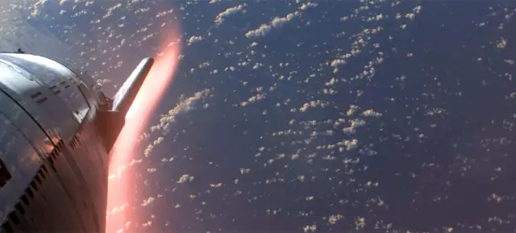
Starship Tam Orbital Uçuş
İlk tam orbital uçuş başarıyla tamamlandı.
Starship, Dünya yörüngesine ulaşarak tarihi bir başarıya imza attı. Bu uçuş, Mars kolonizasyonu için kritik bir adım oldu. Roket, planlanan rotayı tamamlayarak Pasifik Okyanusu'na kontrollü iniş yaptı.
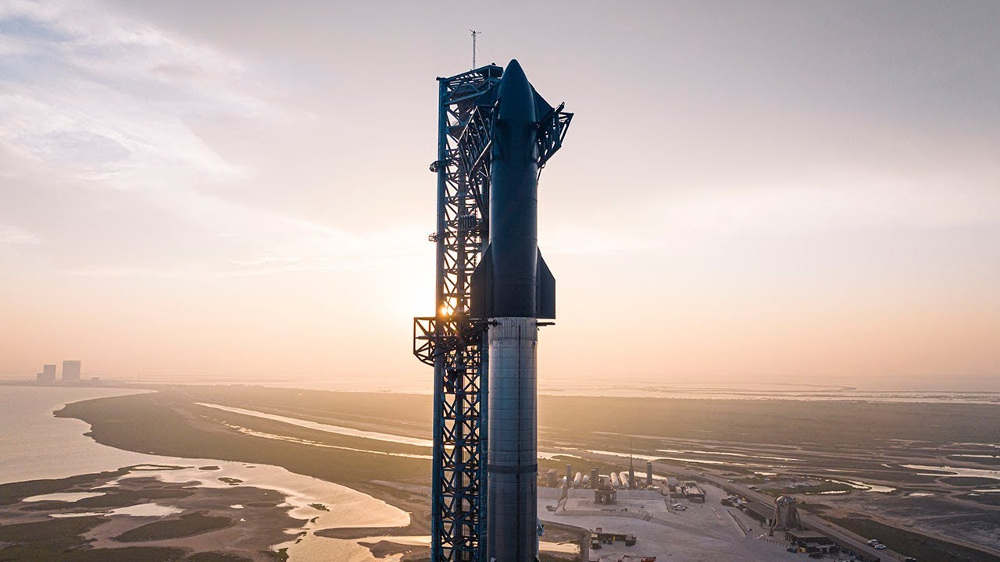
Starship İlk Yörünge Denemesi
Super Heavy ve Starship ilk kez birlikte fırlatıldı.
Boca Chica'dan gerçekleştirilen fırlatma, roketin uzaya çıkış kapasitesini test etti. Aşama ayrılması başarıyla gerçekleşti ve değerli veriler toplandı.
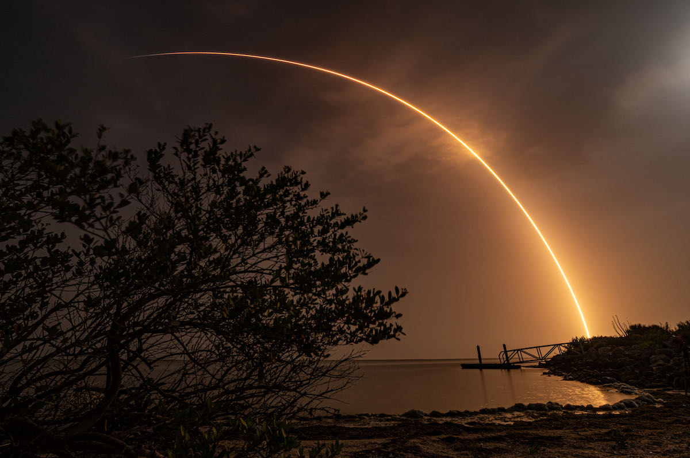
Starlink 3000 Uydu
Yörüngedeki Starlink uydu sayısı 3000'i geçti.
Küresel internet kapsama alanı önemli ölçüde genişledi. 40'tan fazla ülkede hizmet verilmeye başlandı ve milyonlarca kullanıcıya ulaşıldı.
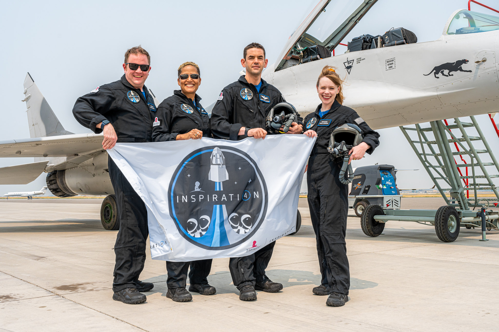
Inspiration4 Sivil Uzay Uçuşu
Tamamen sivil mürettebatla ilk yörünge uçuşu.
Dört sivil astronot, profesyonel astronot olmadan Dünya yörüngesinde 3 gün geçirdi. Uzay turizminde yeni bir çağ başladı.
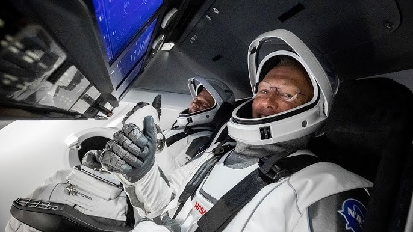
Crew Dragon Demo-2
NASA astronotları Crew Dragon ile ISS'e ulaştı.
Doug Hurley ve Bob Behnken, ABD topraklarından 9 yıl sonra ilk kez uzaya gönderildi. Özel sektörün insanlı uzay uçuşlarındaki ilk başarısı oldu.
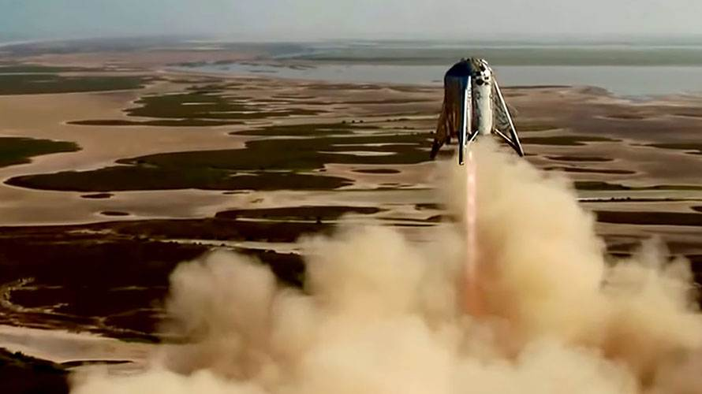
Starhopper Test Uçuşu
Starship prototipinin ilk başarılı zıplama testi.
150 metre yüksekliğe ulaşan Starhopper, Raptor motorunun uçuş kapasitesini kanıtladı. Starship geliştirme programı hız kazandı.
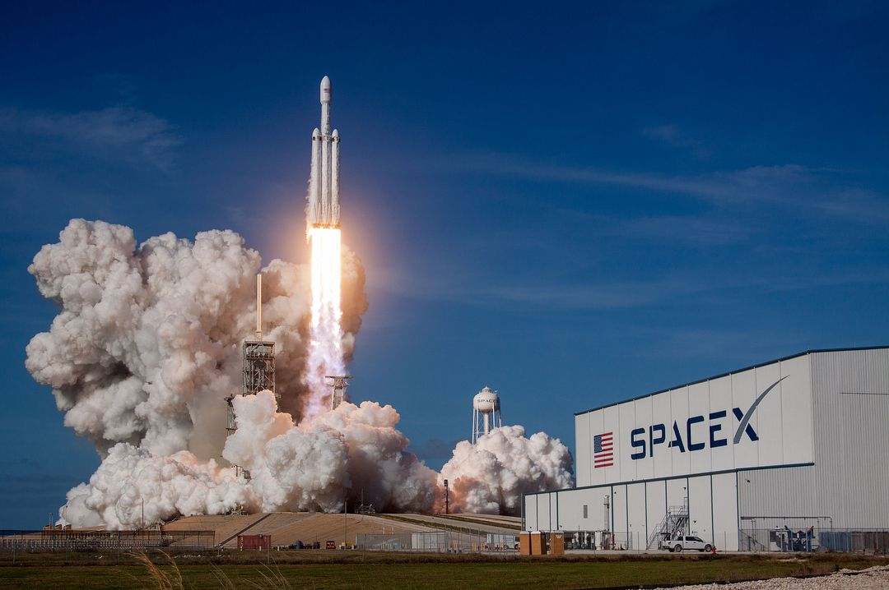
Falcon Heavy İlk Uçuş
Dünyanın en güçlü operasyonel roketi fırlatıldı.
Elon Musk'ın kişisel Tesla Roadster'ı uzaya gönderildi. İki yan booster eş zamanlı iniş yaparak tarihe geçti. Starman hâlâ Güneş yörüngesinde.
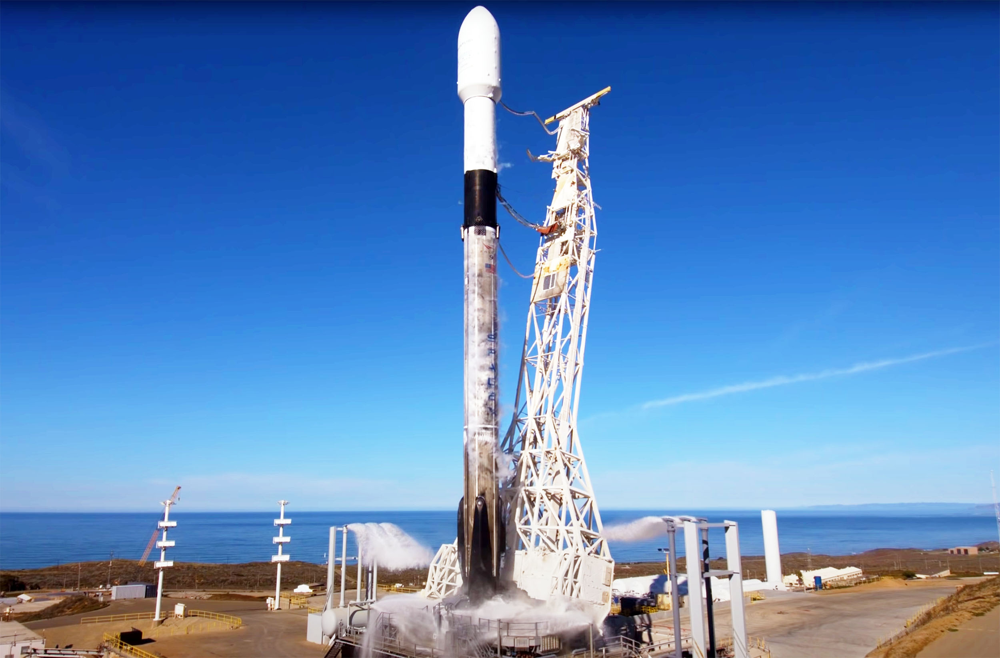
İlk Yeniden Kullanılan Booster
Daha önce uçmuş bir Falcon 9 ikinci kez fırlatıldı.
SES-10 görevi için kullanılan booster, yeniden kullanılabilir roket teknolojisinin ekonomik uygulanabilirliğini kanıtladı.
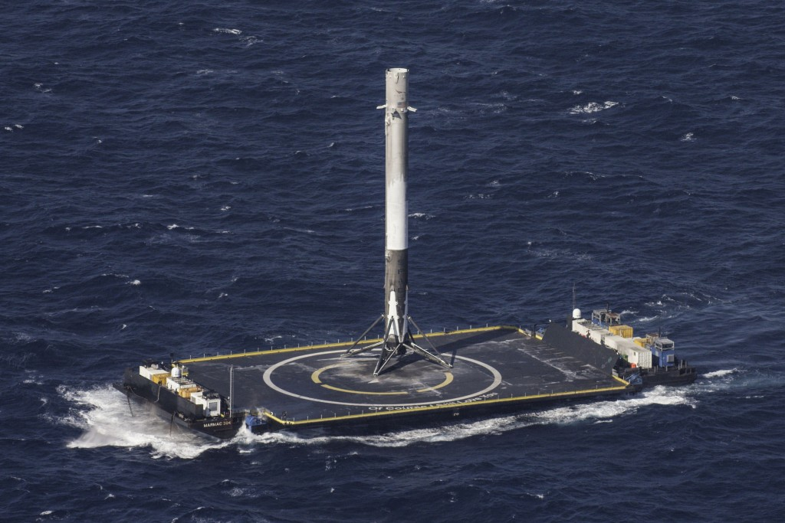
İlk Drone Gemisi İnişi
Falcon 9, okyanus üzerindeki platforma başarıyla indi.
"Of Course I Still Love You" isimli drone gemisine iniş, deniz üstü operasyonların mümkün olduğunu gösterdi. Fırlatma maliyetleri düşmeye başladı.
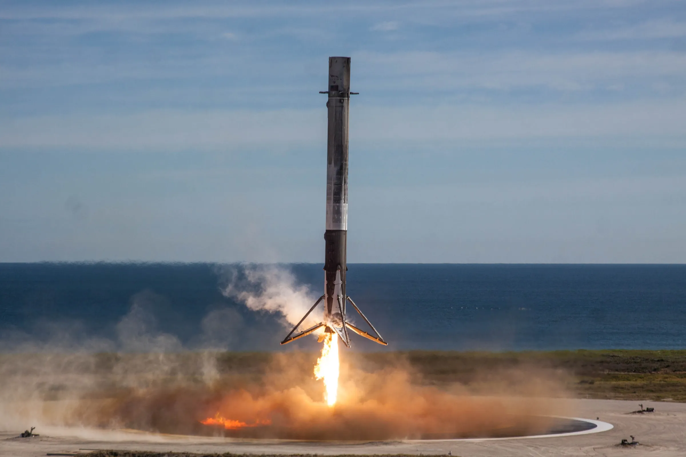
İlk Kara İnişi
Falcon 9 ilk kez dikey iniş yaptı.
Cape Canaveral'a başarılı iniş, uzay endüstrisinde devrim niteliğinde bir an oldu. Yeniden kullanılabilir roketler artık bir hayal değildi.
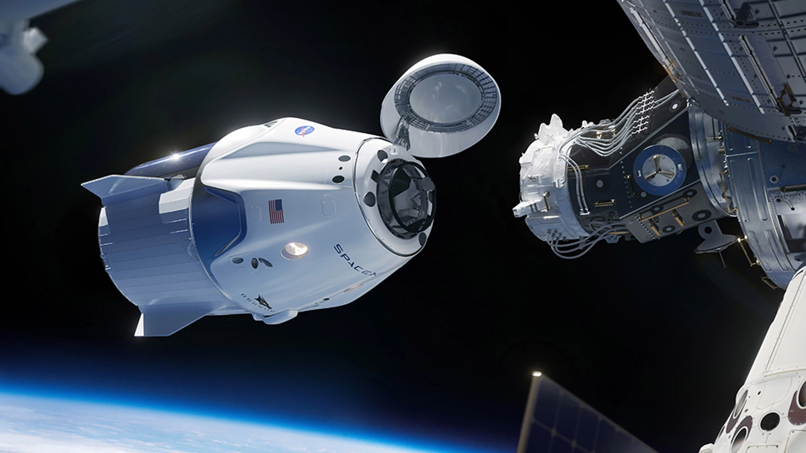
Dragon ISS'e Ulaştı
Özel sektörden ISS'e ilk kargo teslimatı.
Dragon kapsülü, Uluslararası Uzay İstasyonu'na başarıyla kenetlendi. NASA ile Commercial Cargo programı başladı.
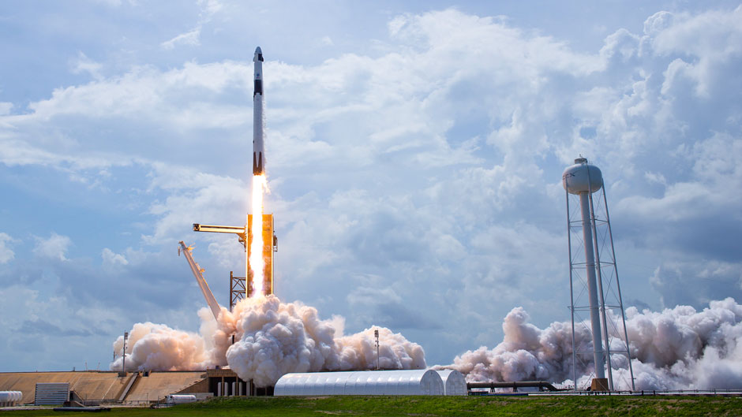
Falcon 9 İlk Uçuş
Ana taşıyıcı roket ilk kez uzaya çıktı.
Cape Canaveral'dan fırlatılan Falcon 9, Dragon kapsülünün temelini attı. Bu roket, şirketin bel kemiği haline gelecekti.
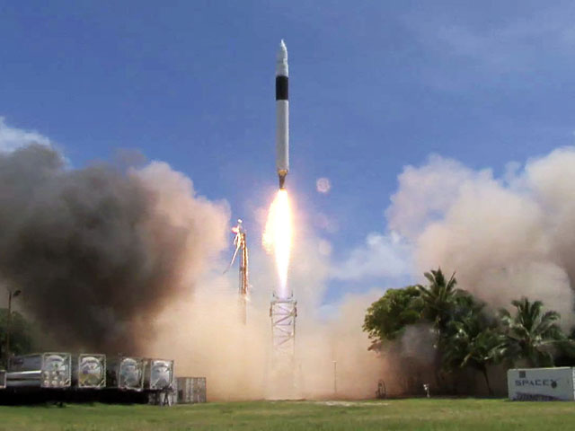
Falcon 1 Yörüngeye Ulaştı
Özel fonlarla geliştirilen ilk sıvı yakıtlı roket yörüngeye çıktı.
Üç başarısız denemeden sonra dördüncü fırlatma başarılı oldu. Şirket iflastan kurtuldu ve tarih yazdı.
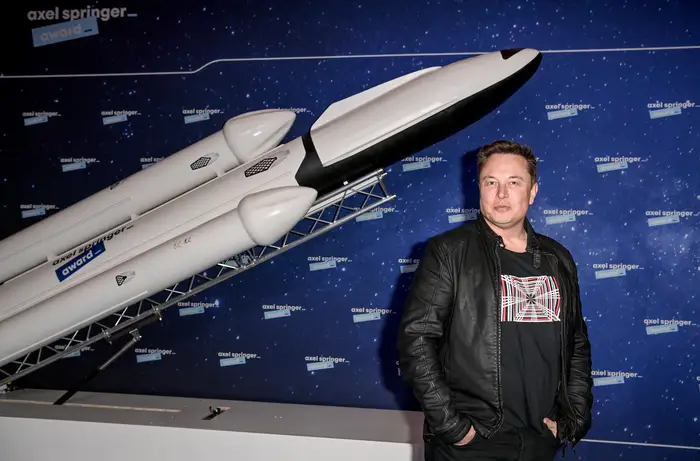
SpaceX Kuruldu
İnsanlığı çok gezegenli bir tür yapma hedefiyle yola çıkıldı.
Elon Musk, uzay ulaşım maliyetlerini düşürmek ve Mars kolonizasyonunu mümkün kılmak amacıyla SpaceX'i kurdu. Hawthorne, California'da küçük bir ekiple başlayan macera, tarihin en büyük uzay şirketlerinden birine dönüştü.